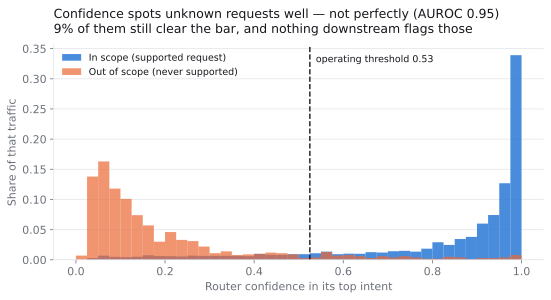
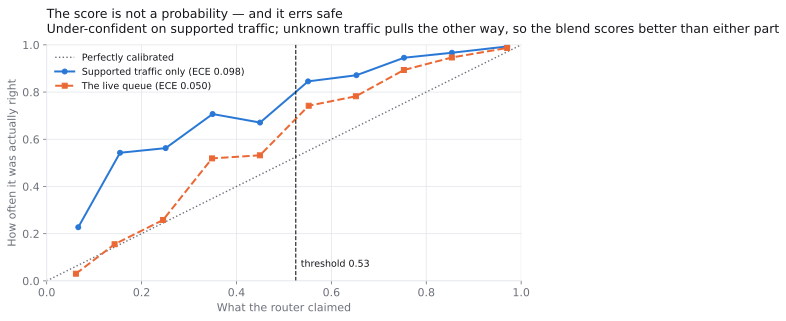
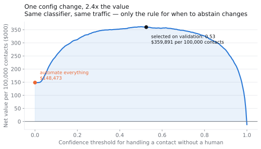
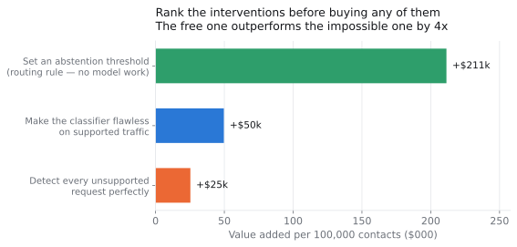
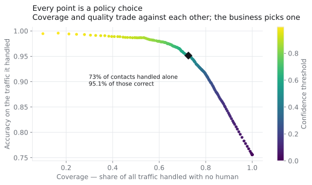
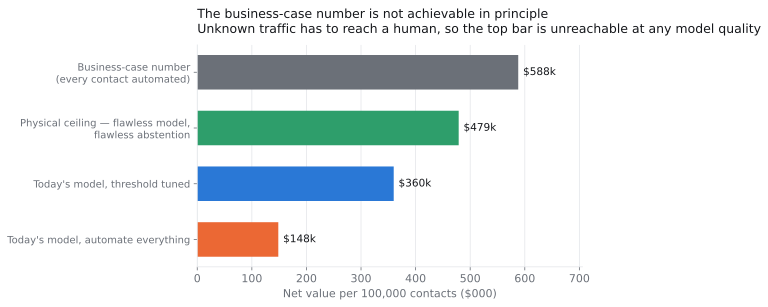
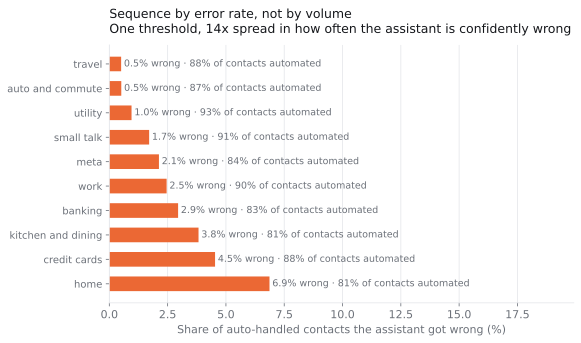
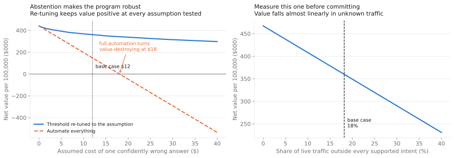

The question behind the question
"Should we automate support with AI" isn't a decision, it's a direction. The decision underneath it is narrower and has a number attached: what share of a live queue can be handled with no human, and is that share worth buying?
Accuracy doesn't answer that, for two reasons that compound. So the deliverable here isn't a model score — it's an operating threshold, the coverage it buys, what that is worth per 100,000 contacts, and a ranked list of what stands between that number and full automation.
Demos are evaluated on traffic the system was built for. A router trained on 150 intents doesn't know a 151st exists — ask it something outside its world and it returns one of its 150 with a confidence score attached, wrong before it's read.
Accuracy weights every error the same; a P&L doesn't. A contact the assistant declines costs one human touch. One it answers confidently and wrongly costs that touch anyway, plus the rework, plus whatever the wrong answer did to the customer. Automation is therefore a decision about how much traffic you expose to the second kind of error.
The data, and why this one
CLINC150 (Larson et al., EMNLP 2019): 22,500 customer requests across 150 supported intents in 10 domains — plus 1,200 out-of-scope requests belonging to none of them.
I picked it for that second set. Almost every public intent dataset contains only traffic the system was designed for, which silently assumes the hardest input never arrives — the most misleading property a dataset can have when the question is "how much of this queue can we automate." CLINC150 was built specifically to break that assumption, and it's the reason this produces a deployable number instead of a demo number.
The demo number, and the queue number
I trained the router the way a vendor would — 15,000 in-scope examples, 150 classes — and deliberately withheld every out-of-scope example from training. That's the real deployment condition: you cannot label the requests nobody has thought of yet.
In-scope test accuracy: 92.4%. Blend in unknown requests at the rate the dataset's own authors designed for, and the same model scores 75.6%. Nothing about the model changed. The queue just got realistic.

The router's own confidence turns out to be a good detector of traffic it was never built for — AUROC 0.95, better than I expected, and the reason the program is viable at all. But good isn't solved: at the operating threshold, 9.3% of out-of-scope requests still clear the bar and get answered confidently. Those are the failures nobody counts — no handoff event, no reopened ticket. The customer gets a fluent wrong answer to a question the system never supported, and leaves.
Is the confidence score even meaningful?
The entire policy is "act when confidence clears X," which assumes the score means something. Worth checking rather than assuming.

Not as a probability, no. On supported traffic the router is under-confident in every single bin — when it claims 15% it's right 54% of the time. That's the safe direction to err in, and it's why a 0.53 threshold delivers 95.1% actual accuracy.
Expected calibration error is 0.098 on supported traffic and improves to 0.050 on the live queue — because out-of-scope contacts are always wrong and pile into the low-confidence bins, cancelling the under-confidence. Two opposite biases partially cancel.
So the calibration metric gets better as the queue gets worse. Anyone monitoring pooled calibration as a health signal would read rising unknown traffic as an improving model. That's a monitoring-design problem, not a modelling one: track the signed gap for supported and unsupported traffic separately, never pooled.
The finding: the routing rule beats the model
Every confidence threshold is a deployable policy, so I priced all of them — cost of a human-handled contact, cost of an AI-handled one, and cost of a confidently wrong answer — and asked which one a business should actually pick.

Hand every contact to the assistant and the program is worth $148,473 per 100,000 contacts. Positive — automation does pay — which is exactly why this version survives review meetings. Add one rule, if confidence is below 0.53, route to a human immediately, and the same model on the same traffic is worth $359,891.
That's +$211,418 from a routing decision, with no change to the model. Now compare it against the intervention everyone actually proposes:

Making the classifier flawless on every request it supports — not "fine-tune it," not "swap in a frontier LLM," but zero errors, an unreachable ideal — adds $49,636. The routing rule adds four times as much.
That comparison is the argument for doing this analysis before buying anything. The instinct in an AI program is to spend on model quality. On this workload the model was never the binding constraint.
It's worth seeing what the threshold actually trades, because "optimal" is a business choice rather than a mathematical one:

Every point on that curve is a deployable policy. The recommended one isn't the most accurate available — pushing the threshold higher reaches 99% accuracy on what it handles — it's the point where the marginal contact automated stops being worth the errors it brings. A client with a lower tolerance for wrong answers should sit further up and to the left, and the analysis tells them exactly what that costs.
The business-case number is unreachable in principle

The $588k is the number a business case anchors on: every contact automated, human cost avoided across the board. It's arithmetically fine and physically impossible.
Out-of-scope traffic has to reach a human — there is no correct automated response to a request the system has no concept for. So even with a perfect classifier and perfect detection of unsupported requests, the ceiling is $478,909. The business-case number overstates the physical maximum by 23%, before anyone writes a line of code.
The delivered number is 75% of that real ceiling. Judged against the pitch it looks like a shortfall; judged against what's achievable it's most of the available value. That reframing is the difference between a program killed at the first review and one that gets extended.
What I got wrong
I wrote three chart captions as predictions before computing them, and the data contradicted all three. I've left the corrections visible rather than quietly rewriting history.
- I predicted the confidence distributions would overlap badly and that detecting unknown traffic would be the binding constraint. It wasn't — AUROC 0.95 — and a perfect classifier turned out to be worth twice what perfect detection was worth.
- I predicted coverage would vary sharply by domain and drive the rollout sequence. It doesn't: 12 points of spread, every domain above 80%. The real spread was in error rate — 14× at the same threshold — which is a better sequencing variable and a different recommendation than the one I'd started writing.
- I predicted the model would be overconfident on real traffic. It's under-confident, in every bin, and the aggregate metric improves as the queue degrades.

What the answer depends on
Three inputs aren't in the data — no transcript log knows what a support contact costs — so they're declared as inputs and swept rather than buried: $6.00 per human-handled contact, $0.12 per AI-handled one, and $12.00 for a confidently wrong answer, which is the contested one.

Full automation turns value-destroying at $18.08 per bad answer. Above that — plausible in regulated, medical or financial contexts — "let the AI handle everything" destroys value outright, while the thresholded policy simply gets more cautious and stays positive across every assumption I tested.
That's the case for the dial. Not that it earns more at the base case, but that it keeps earning when the base case is wrong. And a client can usually tell you whether a wrong answer costs more or less than $18 even when they can't give you a point estimate.
The recommendation
- Deploy with abstention from day one, tuned on a labelled sample of the client's own traffic — not deferred to a phase two. The rule is where most of the value is.
- Sample the queue for out-of-scope rate before committing to a number. Value falls almost linearly in it, from $467k at 0% to $231k at 40%, and a few hundred contacts settle it in a day.
- Instrument the silent failure. Confidently-wrong answers on unsupported requests generate no ticket and no alert. Deflection rate will look excellent while this degrades.
- Set thresholds per domain, not globally. A 14× spread in error rate doesn't deserve one dial.
- Don't fund a model upgrade first. On this workload it's the fourth-best use of the next dollar, behind the routing rule, the traffic measurement and the instrumentation.
Gate 0 before any build: sample 500 live contacts, label in-scope vs out-of-scope, measure true cost per contact. Proceed below 25% unknown traffic; re-run the case above it. Then shadow mode for two weeks — proceed only if abstention-adjusted accuracy lands within 5pp of benchmark on real traffic, because benchmark transfer is the largest untested assumption here. Health metric in steady state is sampled error rate on auto-resolved contacts, never deflection rate.
Two deliverables carry this further: the recommendation memo with stage gates and a risk register, and a seven-slide executive deck for the version of this conversation that happens in a room.
What I'd do differently
- This models single-turn routing. Real assistants escalate mid-conversation, and the cost of a bad handoff three turns in isn't the cost of one at turn one.
- I assume every wrong answer costs the same. A wrong billing answer and a wrong store-hours answer obviously don't, and modelling that properly would probably push the per-domain thresholds further apart than I already recommend.
- It can't see drift. Supported intents decay as products change, so today's in-scope becomes tomorrow's out-of-scope. A static snapshot misses the failure mode most likely to erode value after year one.